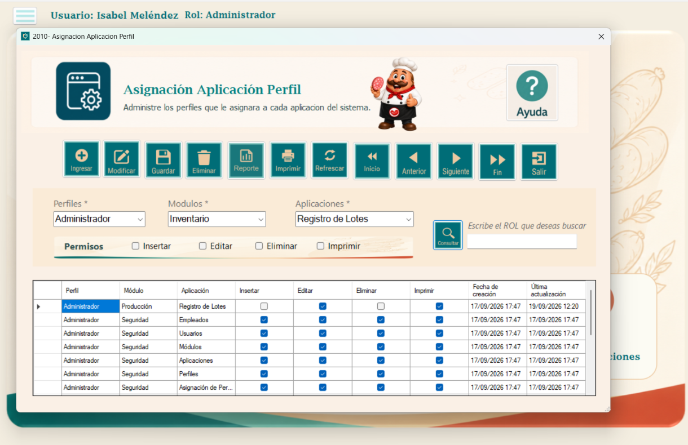
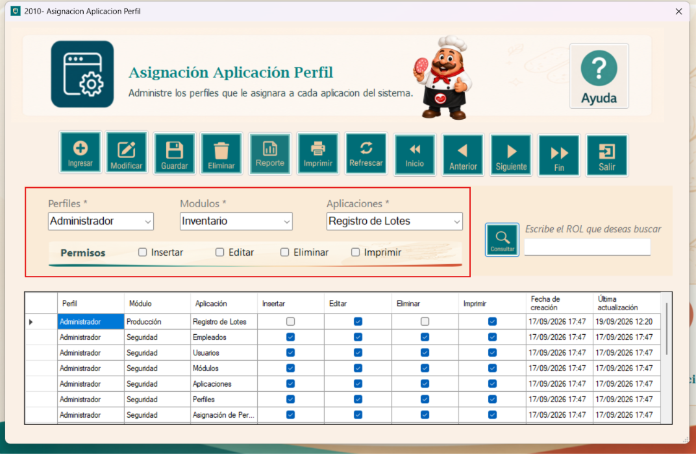
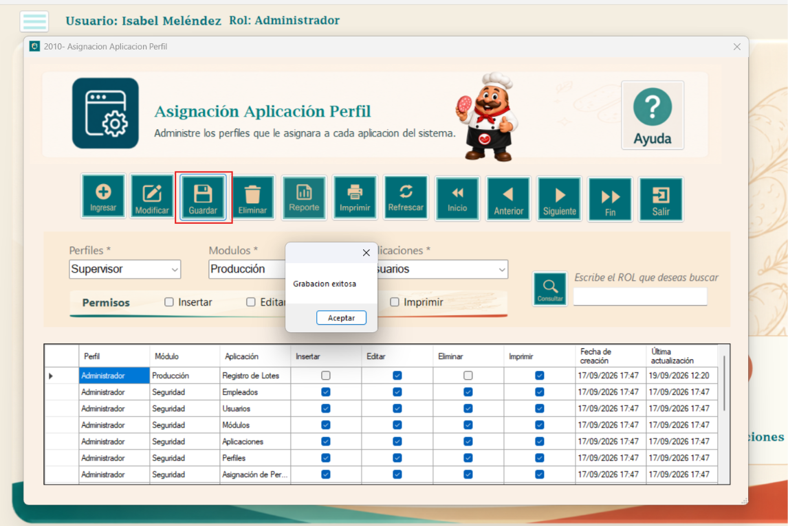
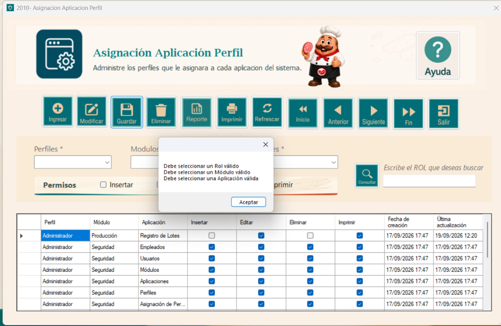
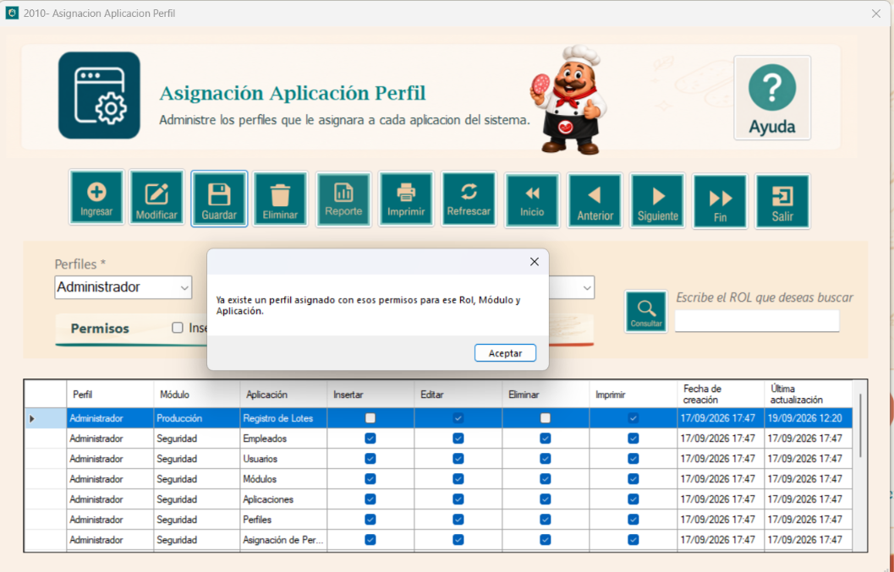
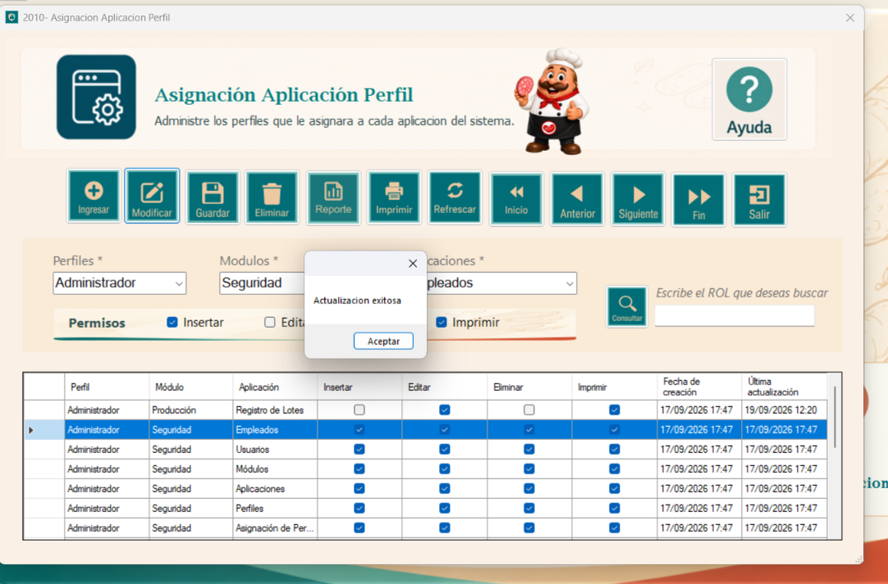
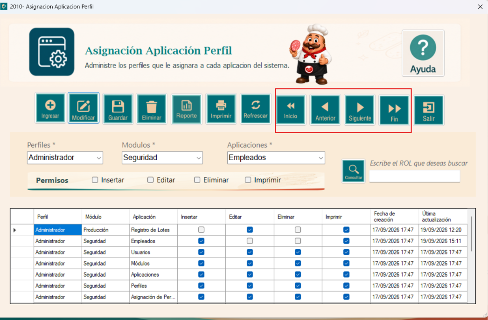
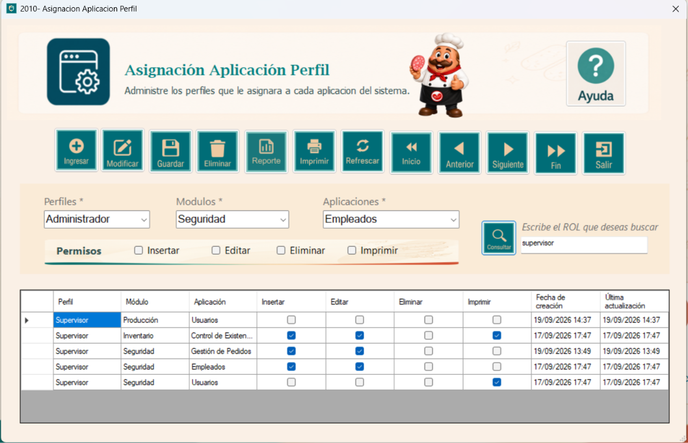
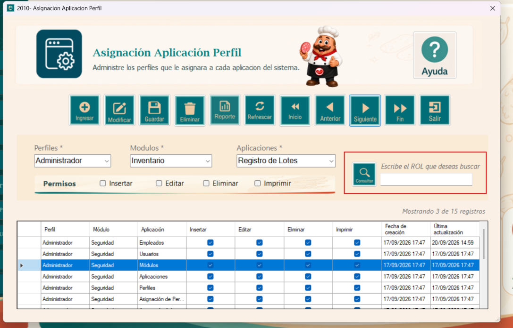
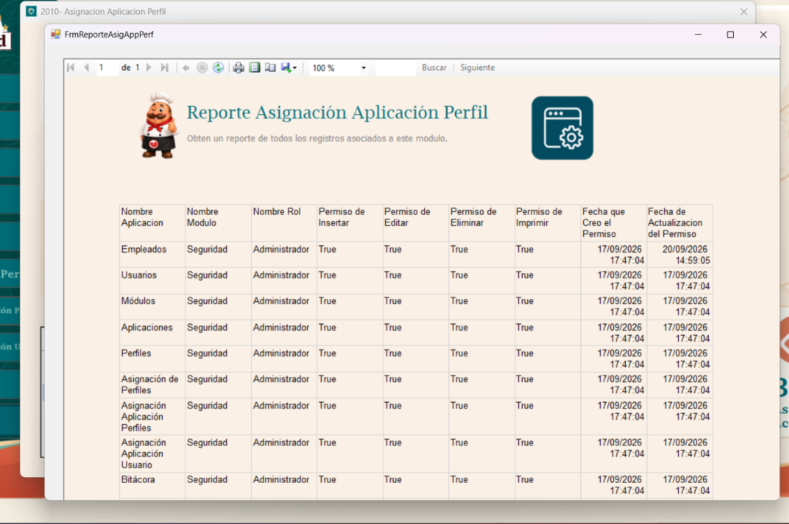

El módulo de Asignación de Aplicaciones a Perfiles permite definir qué módulos o aplicaciones del sistema estarán disponibles para cada usuario de acuerdo con el perfil que tenga asignado. Además, establece las acciones que cada perfil podrá realizar dentro de las aplicaciones autorizadas, como insertar, consultar, modificar, imprimir o eliminar información.
Por ejemplo, el perfil Encargado de Bodega tendrá acceso únicamente a la aplicación Bodega. Dentro de este módulo podrá realizar las operaciones de insertar, consultar, modificar e imprimir registros, pero no tendrá habilitada la opción de eliminar información. Esta acción estará restringida exclusivamente al perfil de Administrador, quien tendrá permisos completos sobre el sistema.

Esta es la parte principal del módulo, ya que aquí se realiza la asignación de aplicaciones según el perfil y se define el nivel de permiso que tendrá cada uno sobre ellas.
Como primer paso, presione el botón Ingresar, que limpia todos los checkbox y combobox de la ventana. Luego seleccione el perfil, el módulo y la aplicación, y marque en los checkbox los permisos que desea otorgar: insertar, editar, eliminar o imprimir.

Una vez definidos los permisos, presione el botón Guardar para almacenar los cambios realizados. Si el registro es único y no está duplicado, el sistema mostrará un mensaje confirmando que la grabación fue exitosa, como se observa en la captura.

Si deja campos vacíos, el sistema lo validará y no permitirá generar la asignación, mostrando un mensaje de aviso.

De igual forma, si intenta ingresar un registro que ya existe, el sistema lo detectará e indicará que ya hay un registro igual al que está intentando guardar.

Para modificar una asignación, primero seleccione la fila completa que desea cambiar. Después, actualice el perfil, el módulo o la aplicación según lo necesite, incluyendo los permisos marcados en los checkbox, y presione Modificar.

Finalmente, en el formulario se encuentran los botones de navegación, que le permiten desplazarse entre los registros.

Para utilizar esta función, escriba en el textbox el nombre del rol que desea buscar. No es necesario preocuparse por las mayúsculas o minúsculas, ya que el sistema reconoce el texto de cualquier forma. Luego presione el botón Consultar y se mostrarán en pantalla todos los resultados que coincidan con lo escrito.

También se incluye un cuadro de control de registros para mejor accesibilidad y orden en la tabla.

Para obtener un reporte de todos los registros asociados a este módulo, presione el botón Reporte. Se abrirá una ventana con el listado de las asignaciones, donde se muestra la aplicación, el módulo, el rol, los permisos de insertar, editar, eliminar e imprimir, y las fechas de creación y de última actualización de cada permiso.
Desde la barra superior del reporte puede desplazarse entre páginas, actualizar la información, ajustar el zoom, buscar un texto dentro del reporte, imprimirlo o exportarlo.
